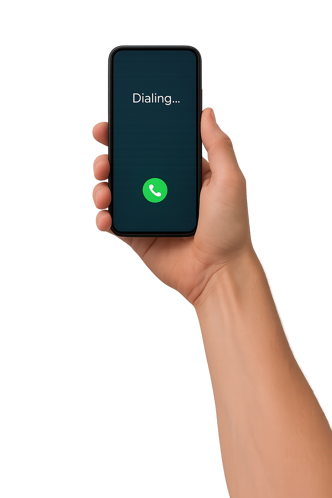

載入全景中…
拖曳螢幕，將手機對著女人，聽完對話。
Drag the screen, aim the phone at the woman, and listen to the conversation.
按下按鈕後開始偵測與播放。/ Start detection and audio after you press the button.
知道了！ / Got it!
去榕樹洞 / Go to the banyan tree hollow

需要啟用 JavaScript 才能檢視 360° 全景。